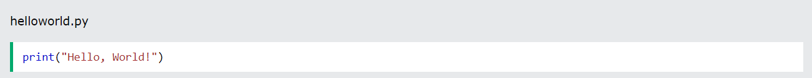

Python Getting Started
Python Install
Many PCs and Macs will have python already installed.
To check if you have python installed on a Windows PC, search in the start bar for Python or run the following on the Command Line (cmd.exe):
To check if you have python installed on a Linux or Mac, then on linux open the command line or on Mac open the Terminal and type:

If you find that you do not have Python installed on your computer, then you can download it for free from the following website:
https://www.python.org/Python Quickstart
Python is an interpreted programming language, this means that as a developer you write Python (.py) files in a text editor and then put those files into the python interpreter to be executed.
The way to run a python file is like this on the command line:Where "helloworld.py" is the name of your python file.
Let's write our first Python file, called helloworld.py, which can be done in any text editor.

Simple as that. Save your file. Open your command line, navigate to the directory where you saved your file, and run:
The output should read:
Congratulations, you have written and executed your first Python program.
The Python Command Line
To test a short amount of code in python sometimes it is quickest and easiest not to write the code in a file. This is made possible because Python can be run as a command line itself.
Type the following on the Windows, Mac or Linux command line:
Or, if the "python" command did not work, you can try "py":
From there you can write any python, including our hello world example from earlier in the tutorial:
Which will write "Hello, World!" in the command line:
Whenever you are done in the python command line, you can simply type the following to quit the python command line interface: